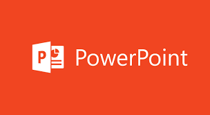

Power Point ou PowerPoint é o nome de um dos programas mais populares criados pela Microsoft. Trata-se de um software que permite realizar apresentações através de diapositivos (mais conhecidos no Brasil como “slides”). O programa contempla a possibilidade de utilizar texto, imagens, música e animações.
História:
O PowerPoint foi lançado pela primeira vez em 1987 pela Forethought, uma empresa de software sediada em Silicon Valley. A Microsoft adquiriu a Forethought em 1987 e incorporou o PowerPoint ao pacote de programas do Microsoft Office. Desde então, o PowerPoint se tornou uma das ferramentas mais populares para a criação de apresentações.
.png)
Recursos e Funcionalidades:
O PowerPoint oferece uma ampla variedade de recursos e funcionalidades que permitem aos usuários criar apresentações dinâmicas e visualmente atraentes.
Slides: O PowerPoint permite criar uma série de slides que podem conter texto, imagens, gráficos, tabelas, vídeos e muito mais. Os slides podem ser organizados e personalizados de acordo com as necessidades do apresentador.
2. Temas e Modelos: O software oferece uma variedade de temas e modelos pré-definidos que facilitam a criação de apresentações com um visual profissional. Os usuários podem escolher entre uma ampla gama de estilos de design para personalizar a aparência dos seus slides.
3. Animações e Transições: O PowerPoint permite adicionar efeitos de animação e transições entre os slides para criar uma apresentação mais dinâmica e envolvente. Esses recursos ajudam a manter a atenção do público durante a apresentação.
4. Ferramentas de Design: O PowerPoint oferece uma série de ferramentas de design para ajustar o layout, as cores, as fontes e os elementos visuais dos slides. Os usuários podem formatar o texto, adicionar sombras, criar formas e aplicar efeitos especiais para aprimorar a aparência dos seus slides.
5. Apresentações de Slides: O PowerPoint possui um modo de apresentação de slides que permite aos usuários exibir suas apresentações em tela cheia. Durante a apresentação, é possível usar recursos como anotações, ponteiro laser virtual e controle de tempo para melhorar a experiência de apresentação.